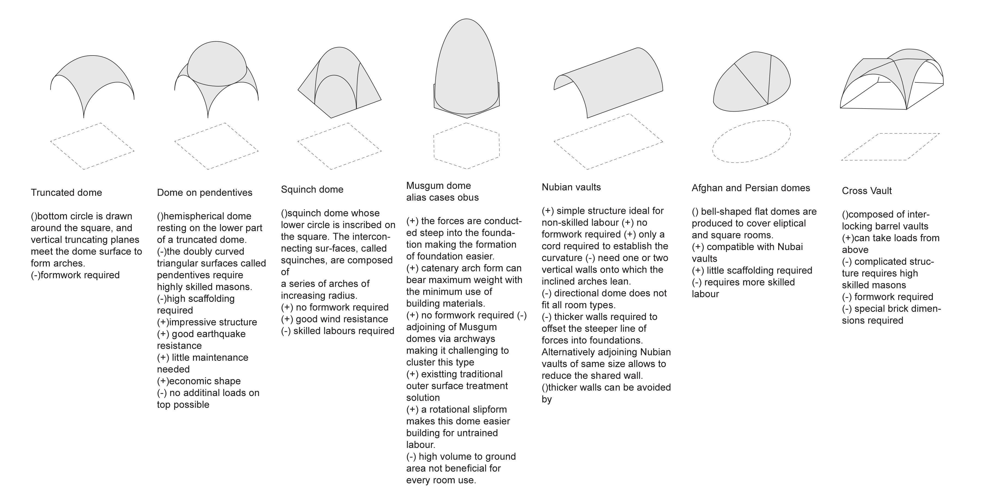
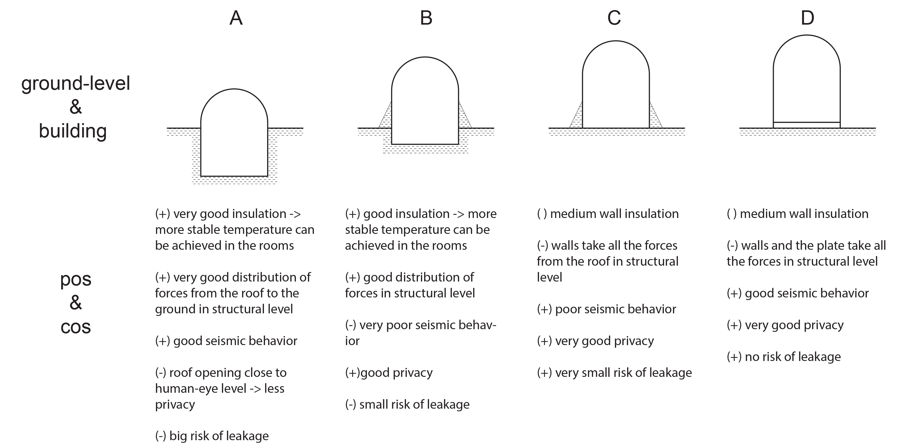
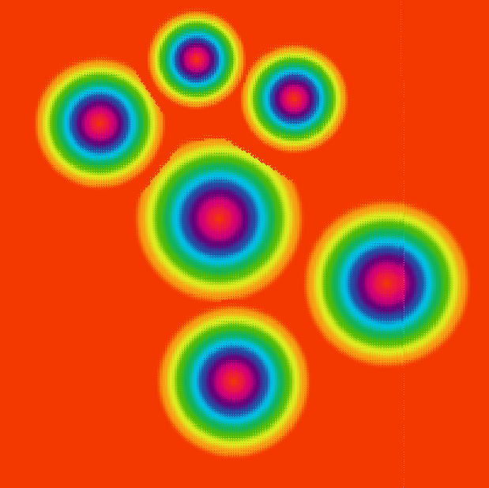
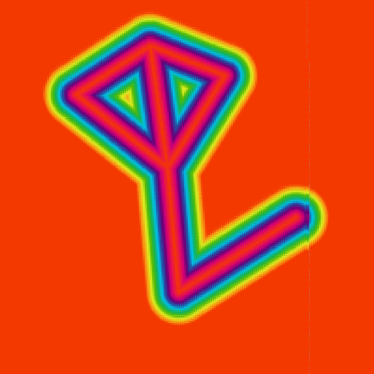
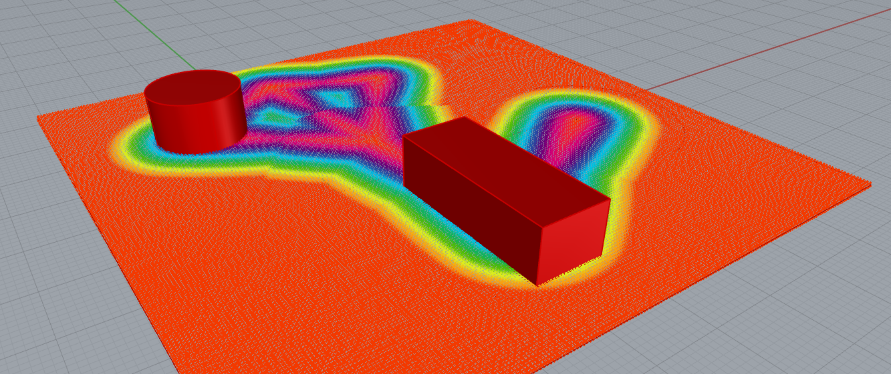
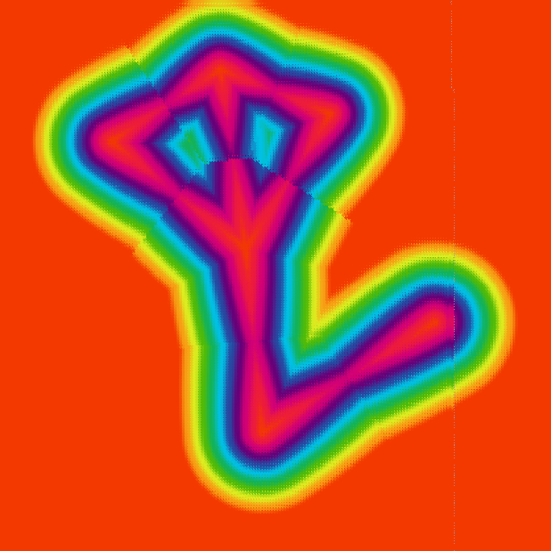
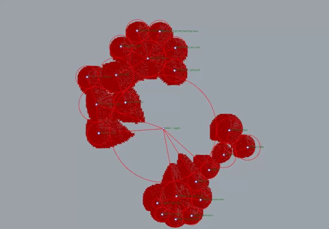

Forming:
Architectural design of the key building types
Last week) we developed rules that should define the design strategy and the guidelines on how the building should look. This week started off with the
The grid
To eventually make the translation to a buildable adobe building, we need to look into masonry. Eventually this turned out to be a bit of a chicken-and-egg-problem, as the structures
should influence the grid, but the grid should also influence the structures chosen. We decided that the shape, and therefore the grid, is the more important one. Nevertheless we
also looked into different kinds of vaults, domes, bricks and sections.
The main conclusions about roofs can be found in the following picture:

Fig. 1: Possibilities of vaults/domes
We realised that to achieve a builable building we have to read into these vaults and how they are constructed. Its not only about the end result, but it should also hold mid-construction.
Reading into this is also very important.
During one of our sessions we also discussed the possibility of digging into the ground to build. It has some good features, shown in Fig 2.

Fig. 1: Possibilities of vaults/domes
Shape
To go from space to shape several paths can be taken to get to a shape and mesh. Several discussions have taken place to get to a basic floorplan and how to get there. This will show some experimenting we did this week to get into designing the hammam.
The first approach we tried is a literal translation of the bubblediagram into a shape. Circles are a great start for compression-only buildings and therefore might work really well. Then we want to add some qualities in the spaces, such as corridors, free height and optical connections. To do this, we divide the plot in a grid with a lot of points and for each point calculate the "importance" of each point of being built. For example, the centre of the circle should have 100% of the height, a point on the edge of the circle has a lower importance and can be built with maybe a 20% height. Points close to a roomconnection should have higher importance, to allow for corridors to exist. When giving the freeheight as an input (Fig 3) all the points in the box are also considered "more important". Overall added (with some factors) this gives a heatmap with importances, seen in Fig 4. This is a potential approach to get an interesting floorplan which might be good for compression-only building. To show the potential we plotted our bubblediagram and moved the points up with x^2 (an approach to cartesian curve, only for presentation purposes) to show how the hammam might look. It was an interesting point of looking at it, but we quickly realized it was never buildable. With only inexperienced builders, we have to come up with something more understandable.

Fig. 3: Importance of the bubble diagram

Fig. 4: Importance of the hallways

Fig. 6: Importance of the free height

Fig. 6: Added imporances to an organic shape

Fig. 6: An example of our bubblediagram, where imporance is heightened under x^2
We realised that this shape is not optimal, for the reason that unskilled people have to build this. We decided to not
futher develop computational ways of getting to a floorplan, and leave computational interventions for later on. However this experiment was far from useless.
It gave an iteresting view on how the whole building might look like and gave a better look towards the garden and the open spaces.
The next path we took was with the Magnetizing floor plan generator, a plugin that translates bubble diagram into spaces within a boundary. It sounds really interesting to use but had some flaws that
made the plugin not suitable for our project. The main flaw is the use of corridors, we planned out 3 "hallways" to function as the main places within the building (the entrance, the garden and the
hammam hall), but implementing this was super hard. Secondly, the maximum rooms allowed in this plugin is 15, where we have more rooms. Lastly, the plugin doesn't give perfect, usable floorplans,
but merely a more interesting to look at floorplan, that is equal to the bubblediagram.
Manual shape
We decided it made more sense to create the shape by hand, as we explored some computational approaches which didn't gave the results we hoped. This opened the discussion on how we'd develop the grid. From the more classical hammam we saw that round shapes or polygons were commonly used. (For reference check this link) Also, it would have a kind of elegance that fit well with the hammam where we like to bring some luxury back in the lives of the habitants. From a structural point of view, polygons are quite allright, as they consist out of triangles. This would make it buildable and suitable for compression-only building. So from the topology we'd prefer to have an polygonal grid, more specific a hexogonal grid. The main issue is shown in Fig 5. Rectangular grids allow for distribution of horizontal forces and to cancel out with the next arch on the grid. This is not really possible with the hexogonal grid. Because of this, from a structural point of view, we'd prefer the rectangular grid. Also; its way easier to design using arches and vaults, seen in the masonry paragraph.
{kind=link}

Fig. 6: Bubble Diagram of the program of requirements
After discussing we decided that topology should be more important and we should try to get it structural buildable, while it doesn't get to complicated. This allows for it to achieve elegance in the design, having a challenge and having hexagons as "our thing". On the other hand, if on the end of next week, we dont have it working, we should retry with rectangles. For this it is important to work parralel on the 3d shape and on the dynamic relaxation.
Next steps
We edited the flowchart to be more fitting of this weeks progress. Mostly it was exploring some ways of approach, as we didnt know what to do exactly.

Fig. 6: Bubble Diagram of the program of requirements
As previously written, next week is an important one that should determine if a hexogonal grid is reachable, but more important buidable. Developing a grid by hand and structural solutions are key in this process. For next week, the flowchart should then look somewhat like this.
Fig. 6: Bubble Diagram of the program of requirements